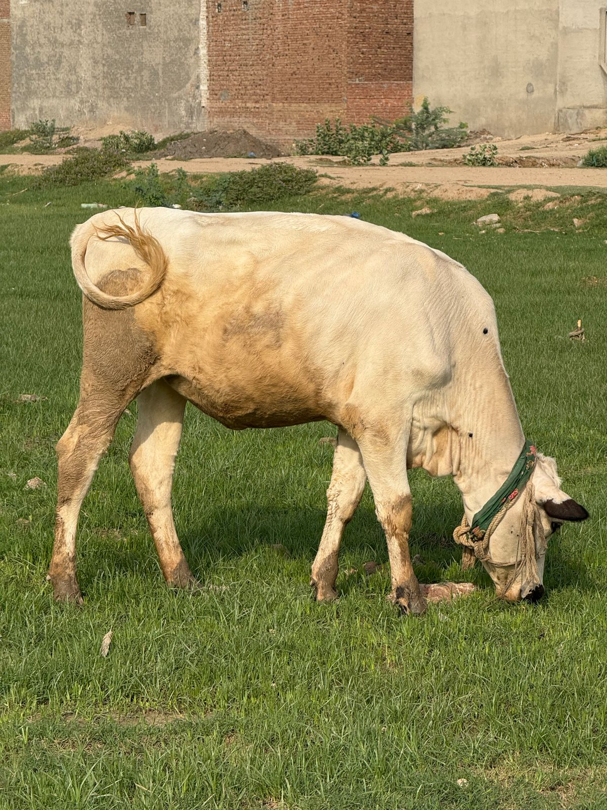
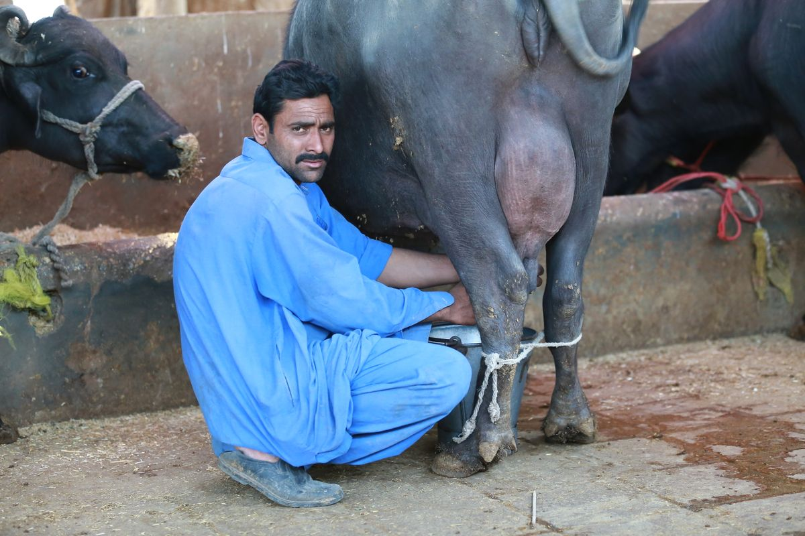
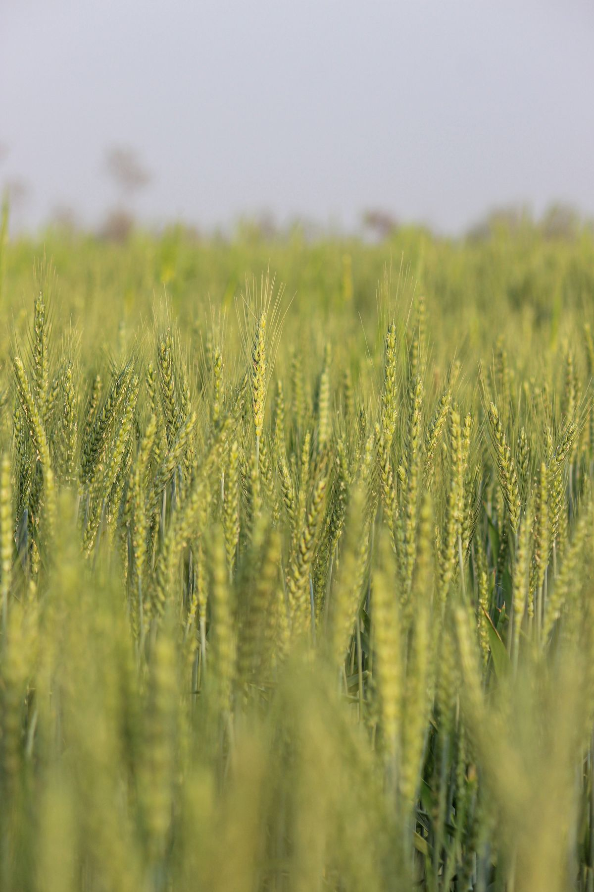

From the farm
Life and work across ORIX Agro's fields and livestock operation.

Sugarcane production

Livestock & grazing land

Livestock & daily farm work
An emerging agricultural and livestock venture based in Risalpur, Nowshera — built with a vision to develop a modern, productive, and sustainable agricultural enterprise, expanding year after year.
The business started on a small scale and is continuously expanding, with plans to grow its operations and production capacity year after year. ORIX Agro works with a professional and dedicated team, drawing on the knowledge of agricultural specialists, veterinarians, doctors, and other technical experts to maintain high standards of production.
Our objective is to combine modern agricultural practices, quality inputs, expert knowledge, and responsible management to produce high-quality agricultural and livestock products — growing from a small-scale beginning toward a larger, modern agricultural enterprise.

A working farm and livestock operation, expanding in scope and scale each season.
Contemporary techniques applied to traditional land, raising yield and consistency.
Managed under the guidance of veterinarians for health, welfare, and quality.
Season-driven crop production with an emphasis on quality and consistency.
A growing part of the crop portfolio as operations expand.
Quality inputs selected to lift yield and resilience across every crop cycle.
Specialist and technical expertise applied at every stage of production.
Life and work across ORIX Agro's fields and livestock operation.

